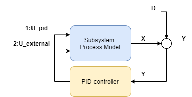
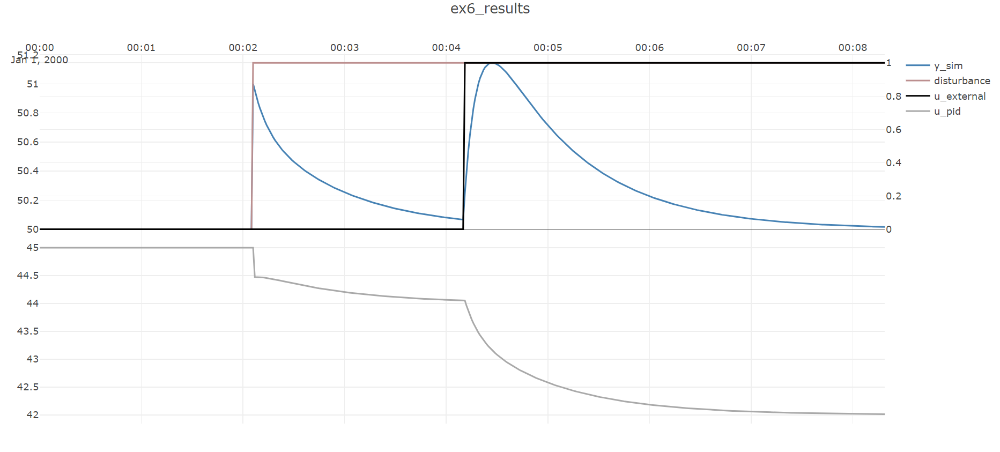

Example 6 :Larger-scale dynamic process simulation
The last example illustrated one very simple "process" consisting of a single PID-controller and a single-input/single-output process model,
which could be simulated using CoSimulateProcessAndPID.
Most systems of interest are more complicated, as each each model may have more than one input, and there may be several different PID-controllers and several
subprocess-models interacting. Simulation of these kinds of systems is done using the class ProessSimulator.
To keep things familiar this example extends on the previous. The subprocess-model is extended to two inputs, one external input signal is added in addition to the pid-signal input as shown below:

The second output is given a gain of 2 by adding a second process
gain to modelParamters:
ProcessGains = new double[] { 1,2 },
Then the process simulator class is initialized, it needs a list of all models classes that will be simulated:
var processSim = new ProcessSimulator (timeBase_s,
new List<ISimulatableModel> { pidModel, processModel });
Then the two models pidModel and processModel need to be given two connections to make the feedback loop:
processSim.ConnectModels(processModel,pidModel);
processSim.ConnectModels(pidModel, processModel, (int)INDEX.FIRST);
Notice that since processModel now has two inputs, we need to specify which input the pidModel connects to.
If you like, you can use the enum INDEX to produce more readable code, or just specify the integer directly.
Similarly to the previous example, a disturbance with a step of amplitude 1 is added 1/4th of the way through the dataset is added to the process model:
processSim.AddSignal(processModel, SignalType.Distubance_D,TimeSeriesCreator.Step(N/4,N,0,1));
and a constant setpoint of 50 is applied to the process model:
processSim.AddSignal(pidModel, SignalType.Setpoint_Yset, TimeSeriesCreator.Constant(50, N));
Note
SubProcessSimulator.CoSimulateProcessAndPID co-simulates a single PID-controller/processes combination such as this, if you set the below signal to zero,
for instance by setting the value TimeSeriesCreator.Step(0,N) then the simulation in this example will replicate the previous simulation in the previous example exactly.
Then to extend the example, add a step change from 0 to 1 in the external input:
processSim.AddSignal(processModel, SignalType.External_U, TimeSeriesCreator.Step(N / 2, N, 0, 1), (int)INDEX.SECOND);
making sure to apply this signal to the second input of the processModel.
After all connections are made and signals added, then simulation is done using
var isOk = processSim.Simulate(out TimeSeriesDataSet simData);
This method outputs an object of the type TimeSeriesDataSet that stores all the time-series of the simulation, both the signals added above and the simulated
values, which can be accessed through convenient getters.
For example the simulated output of processModel can be extracted from simData like this:
simData.GetValues(processModel.GetID(),SignalType.Output_Y_sim)
Notice how AddSignal applies a SignalType to each signal, this is then used internally in Simulate, but is also used to make it easier to extract and interpret signals
after the simulation.
The entire code:
public void Ex6_process_simulation()
{
int timeBase_s = 1;
int N = 500;
DefaultProcessModelParameters modelParameters = new DefaultProcessModelParameters
{
WasAbleToIdentify = true,
TimeConstant_s = 10,
ProcessGains = new double[] { 1,2 },
TimeDelay_s = 0,
Bias = 5
};
DefaultProcessModel processModel
= new DefaultProcessModel(modelParameters, timeBase_s,"SubProcess1");
var pidParameters = new PIDModelParameters()
{
Kp = 0.5,
Ti_s = 20
};
var pidModel = new PIDModel(pidParameters, timeBase_s,"PID1");
var processSim = new ProcessSimulator (timeBase_s,
new List<ISimulatableModel> { pidModel, processModel });
processSim.ConnectModels(processModel,pidModel);
processSim.ConnectModels(pidModel,processModel,(int)INDEX.FIRST);
processSim.AddSignal(processModel,SignalType.Distubance_D,
TimeSeriesCreator.Step(N/4,N,0,1));
processSim.AddSignal(pidModel,SignalType.Setpoint_Yset,
TimeSeriesCreator.Constant(50,N));
processSim.AddSignal(processModel,SignalType.External_U,
TimeSeriesCreator.Step(N/2,N,0,1),(int)INDEX.SECOND);
var isOk = processSim.Simulate(out TimeSeriesDataSet simData);
Plot.FromList(new List<double[]> {
simData.GetValues(processModel.GetID(),SignalType.Output_Y_sim),
simData.GetValues(processModel.GetID(),SignalType.Distubance_D),
simData.GetValues(processModel.GetID(),SignalType.External_U,(int)INDEX.SECOND),
simData.GetValues(pidModel.GetID(),SignalType.PID_U)
},
new List<string> { "y1=y_sim", "y2=disturbance", "y2=u_external","y3=u_pid" },
timeBase_s, "ex6_results");
}
The resulting dynamic simulation: 
The effect of the disturbance step entering 1/4th of the way through the dataset and then being rejected is seen, and is in fact exactly like in the previous example, but now a step change in the input is also seen half-way through the dataset.
Note
This example illustrates the work-flow that supports large-scale simulations, but the process example considered is still quite small. For examples of large-scale simulations, refer to the section on dynamic simulation.